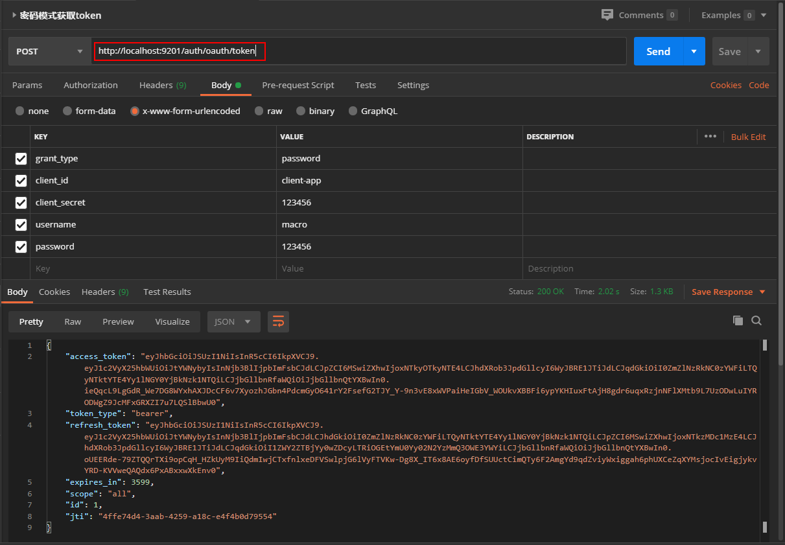
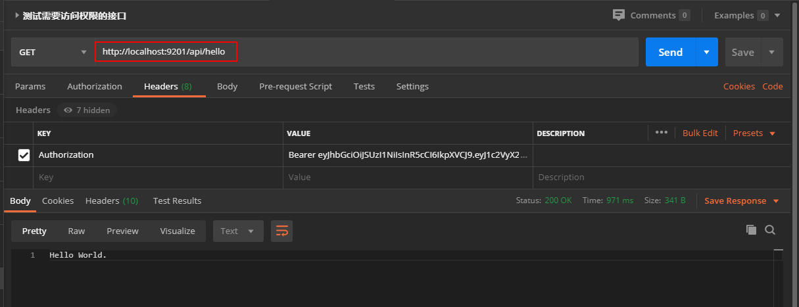
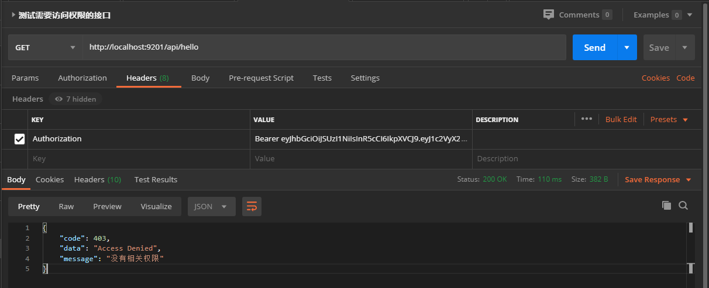

学习不走弯路，关注公众号 回复「学习路线」，获取mall项目专属学习路线！
微服务权限终极解决方案，Spring Cloud Gateway + Oauth2 实现统一认证和鉴权！
最近发现了一个很好的微服务权限解决方案，可以通过认证服务进行统一认证，然后通过网关来统一校验认证和鉴权。此方案为目前最新方案，仅支持Spring Boot 2.2.0、Spring Cloud Hoxton 以上版本，本文将详细介绍该方案的实现，希望对大家有所帮助！
前置知识
我们将采用Nacos作为注册中心，Gateway作为网关，使用
nimbus-jose-jwtJWT库操作JWT令牌，对这些技术不了解的朋友可以看下下面的文章。
应用架构
我们理想的解决方案应该是这样的，认证服务负责认证，网关负责校验认证和鉴权，其他API服务负责处理自己的业务逻辑。安全相关的逻辑只存在于认证服务和网关服务中，其他服务只是单纯地提供服务而没有任何安全相关逻辑。
相关服务划分：
- micro-oauth2-gateway：网关服务，负责请求转发和鉴权功能，整合Spring Security+Oauth2；
- micro-oauth2-auth：Oauth2认证服务，负责对登录用户进行认证，整合Spring Security+Oauth2；
- micro-oauth2-api：受保护的API服务，用户鉴权通过后可以访问该服务，不整合Spring Security+Oauth2。
方案实现
下面介绍下这套解决方案的具体实现，依次搭建认证服务、网关服务和API服务。
micro-oauth2-auth
我们首先来搭建认证服务，它将作为Oauth2的认证服务使用，并且网关服务的鉴权功能也需要依赖它。
- 在
pom.xml中添加相关依赖，主要是Spring Security、Oauth2、JWT、Redis相关依赖；
<dependencies>
<dependency>
<groupId>org.springframework.boot</groupId>
<artifactId>spring-boot-starter-web</artifactId>
</dependency>
<dependency>
<groupId>org.springframework.boot</groupId>
<artifactId>spring-boot-starter-security</artifactId>
</dependency>
<dependency>
<groupId>org.springframework.cloud</groupId>
<artifactId>spring-cloud-starter-oauth2</artifactId>
</dependency>
<dependency>
<groupId>com.nimbusds</groupId>
<artifactId>nimbus-jose-jwt</artifactId>
<version>8.16</version>
</dependency>
<!-- redis -->
<dependency>
<groupId>org.springframework.boot</groupId>
<artifactId>spring-boot-starter-data-redis</artifactId>
</dependency>
</dependencies>
- 在
application.yml中添加相关配置，主要是Nacos和Redis相关配置；
server:
port: 9401
spring:
profiles:
active: dev
application:
name: micro-oauth2-auth
cloud:
nacos:
discovery:
server-addr: localhost:8848
jackson:
date-format: yyyy-MM-dd HH:mm:ss
redis:
database: 0
port: 6379
host: localhost
password:
management:
endpoints:
web:
exposure:
include: "*"
- 使用
keytool生成RSA证书jwt.jks，复制到resource目录下，在JDK的bin目录下使用如下命令即可；
keytool -genkey -alias jwt -keyalg RSA -keystore jwt.jks
- 创建
UserServiceImpl类实现Spring Security的UserDetailsService接口，用于加载用户信息；
/**
* 用户管理业务类
* Created by macro on 2020/6/19.
*/
@Service
public class UserServiceImpl implements UserDetailsService {
private List<UserDTO> userList;
@Autowired
private PasswordEncoder passwordEncoder;
@PostConstruct
public void initData() {
String password = passwordEncoder.encode("123456");
userList = new ArrayList<>();
userList.add(new UserDTO(1L,"macro", password,1, CollUtil.toList("ADMIN")));
userList.add(new UserDTO(2L,"andy", password,1, CollUtil.toList("TEST")));
}
@Override
public UserDetails loadUserByUsername(String username) throws UsernameNotFoundException {
List<UserDTO> findUserList = userList.stream().filter(item -> item.getUsername().equals(username)).collect(Collectors.toList());
if (CollUtil.isEmpty(findUserList)) {
throw new UsernameNotFoundException(MessageConstant.USERNAME_PASSWORD_ERROR);
}
SecurityUser securityUser = new SecurityUser(findUserList.get(0));
if (!securityUser.isEnabled()) {
throw new DisabledException(MessageConstant.ACCOUNT_DISABLED);
} else if (!securityUser.isAccountNonLocked()) {
throw new LockedException(MessageConstant.ACCOUNT_LOCKED);
} else if (!securityUser.isAccountNonExpired()) {
throw new AccountExpiredException(MessageConstant.ACCOUNT_EXPIRED);
} else if (!securityUser.isCredentialsNonExpired()) {
throw new CredentialsExpiredException(MessageConstant.CREDENTIALS_EXPIRED);
}
return securityUser;
}
}
- 添加认证服务相关配置
Oauth2ServerConfig，需要配置加载用户信息的服务UserServiceImpl及RSA的钥匙对KeyPair；
/**
* 认证服务器配置
* Created by macro on 2020/6/19.
*/
@AllArgsConstructor
@Configuration
@EnableAuthorizationServer
public class Oauth2ServerConfig extends AuthorizationServerConfigurerAdapter {
private final PasswordEncoder passwordEncoder;
private final UserServiceImpl userDetailsService;
private final AuthenticationManager authenticationManager;
private final JwtTokenEnhancer jwtTokenEnhancer;
@Override
public void configure(ClientDetailsServiceConfigurer clients) throws Exception {
clients.inMemory()
.withClient("client-app")
.secret(passwordEncoder.encode("123456"))
.scopes("all")
.authorizedGrantTypes("password", "refresh_token")
.accessTokenValiditySeconds(3600)
.refreshTokenValiditySeconds(86400);
}
@Override
public void configure(AuthorizationServerEndpointsConfigurer endpoints) throws Exception {
TokenEnhancerChain enhancerChain = new TokenEnhancerChain();
List<TokenEnhancer> delegates = new ArrayList<>();
delegates.add(jwtTokenEnhancer);
delegates.add(accessTokenConverter());
enhancerChain.setTokenEnhancers(delegates); //配置JWT的内容增强器
endpoints.authenticationManager(authenticationManager)
.userDetailsService(userDetailsService) //配置加载用户信息的服务
.accessTokenConverter(accessTokenConverter())
.tokenEnhancer(enhancerChain);
}
@Override
public void configure(AuthorizationServerSecurityConfigurer security) throws Exception {
security.allowFormAuthenticationForClients();
}
@Bean
public JwtAccessTokenConverter accessTokenConverter() {
JwtAccessTokenConverter jwtAccessTokenConverter = new JwtAccessTokenConverter();
jwtAccessTokenConverter.setKeyPair(keyPair());
return jwtAccessTokenConverter;
}
@Bean
public KeyPair keyPair() {
//从classpath下的证书中获取秘钥对
KeyStoreKeyFactory keyStoreKeyFactory = new KeyStoreKeyFactory(new ClassPathResource("jwt.jks"), "123456".toCharArray());
return keyStoreKeyFactory.getKeyPair("jwt", "123456".toCharArray());
}
}
- 如果你想往JWT中添加自定义信息的话，比如说
登录用户的ID，可以自己实现TokenEnhancer接口；
/**
* JWT内容增强器
* Created by macro on 2020/6/19.
*/
@Component
public class JwtTokenEnhancer implements TokenEnhancer {
@Override
public OAuth2AccessToken enhance(OAuth2AccessToken accessToken, OAuth2Authentication authentication) {
SecurityUser securityUser = (SecurityUser) authentication.getPrincipal();
Map<String, Object> info = new HashMap<>();
//把用户ID设置到JWT中
info.put("id", securityUser.getId());
((DefaultOAuth2AccessToken) accessToken).setAdditionalInformation(info);
return accessToken;
}
}
- 由于我们的网关服务需要RSA的公钥来验证签名是否合法，所以认证服务需要有个接口把公钥暴露出来；
/**
* 获取RSA公钥接口
* Created by macro on 2020/6/19.
*/
@RestController
public class KeyPairController {
@Autowired
private KeyPair keyPair;
@GetMapping("/rsa/publicKey")
public Map<String, Object> getKey() {
RSAPublicKey publicKey = (RSAPublicKey) keyPair.getPublic();
RSAKey key = new RSAKey.Builder(publicKey).build();
return new JWKSet(key).toJSONObject();
}
}
- 不要忘了还需要配置Spring Security，允许获取公钥接口的访问；
/**
* SpringSecurity配置
* Created by macro on 2020/6/19.
*/
@Configuration
@EnableWebSecurity
public class WebSecurityConfig extends WebSecurityConfigurerAdapter {
@Override
protected void configure(HttpSecurity http) throws Exception {
http.authorizeRequests()
.requestMatchers(EndpointRequest.toAnyEndpoint()).permitAll()
.antMatchers("/rsa/publicKey").permitAll()
.anyRequest().authenticated();
}
@Bean
@Override
public AuthenticationManager authenticationManagerBean() throws Exception {
return super.authenticationManagerBean();
}
@Bean
public PasswordEncoder passwordEncoder() {
return new BCryptPasswordEncoder();
}
}
- 创建一个资源服务
ResourceServiceImpl，初始化的时候把资源与角色匹配关系缓存到Redis中，方便网关服务进行鉴权的时候获取。
/**
* 资源与角色匹配关系管理业务类
* Created by macro on 2020/6/19.
*/
@Service
public class ResourceServiceImpl {
private Map<String, List<String>> resourceRolesMap;
@Autowired
private RedisTemplate<String,Object> redisTemplate;
@PostConstruct
public void initData() {
resourceRolesMap = new TreeMap<>();
resourceRolesMap.put("/api/hello", CollUtil.toList("ADMIN"));
resourceRolesMap.put("/api/user/currentUser", CollUtil.toList("ADMIN", "TEST"));
redisTemplate.opsForHash().putAll(RedisConstant.RESOURCE_ROLES_MAP, resourceRolesMap);
}
}
micro-oauth2-gateway
接下来我们就可以搭建网关服务了，它将作为Oauth2的资源服务、客户端服务使用，对访问微服务的请求进行统一的校验认证和鉴权操作。
- 在
pom.xml中添加相关依赖，主要是Gateway、Oauth2和JWT相关依赖；
<dependencies>
<dependency>
<groupId>org.springframework.boot</groupId>
<artifactId>spring-boot-starter-webflux</artifactId>
</dependency>
<dependency>
<groupId>org.springframework.cloud</groupId>
<artifactId>spring-cloud-starter-gateway</artifactId>
</dependency>
<dependency>
<groupId>org.springframework.security</groupId>
<artifactId>spring-security-config</artifactId>
</dependency>
<dependency>
<groupId>org.springframework.security</groupId>
<artifactId>spring-security-oauth2-resource-server</artifactId>
</dependency>
<dependency>
<groupId>org.springframework.security</groupId>
<artifactId>spring-security-oauth2-client</artifactId>
</dependency>
<dependency>
<groupId>org.springframework.security</groupId>
<artifactId>spring-security-oauth2-jose</artifactId>
</dependency>
<dependency>
<groupId>com.nimbusds</groupId>
<artifactId>nimbus-jose-jwt</artifactId>
<version>8.16</version>
</dependency>
</dependencies>
- 在
application.yml中添加相关配置，主要是路由规则的配置、Oauth2中RSA公钥的配置及路由白名单的配置；
server:
port: 9201
spring:
profiles:
active: dev
application:
name: micro-oauth2-gateway
cloud:
nacos:
discovery:
server-addr: localhost:8848
gateway:
routes: #配置路由规则
- id: oauth2-api-route
uri: lb://micro-oauth2-api
predicates:
- Path=/api/**
filters:
- StripPrefix=1
- id: oauth2-auth-route
uri: lb://micro-oauth2-auth
predicates:
- Path=/auth/**
filters:
- StripPrefix=1
discovery:
locator:
enabled: true #开启从注册中心动态创建路由的功能
lower-case-service-id: true #使用小写服务名，默认是大写
security:
oauth2:
resourceserver:
jwt:
jwk-set-uri: 'http://localhost:9401/rsa/publicKey' #配置RSA的公钥访问地址
redis:
database: 0
port: 6379
host: localhost
password:
secure:
ignore:
urls: #配置白名单路径
- "/actuator/**"
- "/auth/oauth/token"
- 对网关服务进行配置安全配置，由于Gateway使用的是
WebFlux，所以需要使用@EnableWebFluxSecurity注解开启；
/**
* 资源服务器配置
* Created by macro on 2020/6/19.
*/
@AllArgsConstructor
@Configuration
@EnableWebFluxSecurity
public class ResourceServerConfig {
private final AuthorizationManager authorizationManager;
private final IgnoreUrlsConfig ignoreUrlsConfig;
private final RestfulAccessDeniedHandler restfulAccessDeniedHandler;
private final RestAuthenticationEntryPoint restAuthenticationEntryPoint;
@Bean
public SecurityWebFilterChain springSecurityFilterChain(ServerHttpSecurity http) {
http.oauth2ResourceServer().jwt()
.jwtAuthenticationConverter(jwtAuthenticationConverter());
http.authorizeExchange()
.pathMatchers(ArrayUtil.toArray(ignoreUrlsConfig.getUrls(),String.class)).permitAll()//白名单配置
.anyExchange().access(authorizationManager)//鉴权管理器配置
.and().exceptionHandling()
.accessDeniedHandler(restfulAccessDeniedHandler)//处理未授权
.authenticationEntryPoint(restAuthenticationEntryPoint)//处理未认证
.and().csrf().disable();
return http.build();
}
@Bean
public Converter<Jwt, ? extends Mono<? extends AbstractAuthenticationToken>> jwtAuthenticationConverter() {
JwtGrantedAuthoritiesConverter jwtGrantedAuthoritiesConverter = new JwtGrantedAuthoritiesConverter();
jwtGrantedAuthoritiesConverter.setAuthorityPrefix(AuthConstant.AUTHORITY_PREFIX);
jwtGrantedAuthoritiesConverter.setAuthoritiesClaimName(AuthConstant.AUTHORITY_CLAIM_NAME);
JwtAuthenticationConverter jwtAuthenticationConverter = new JwtAuthenticationConverter();
jwtAuthenticationConverter.setJwtGrantedAuthoritiesConverter(jwtGrantedAuthoritiesConverter);
return new ReactiveJwtAuthenticationConverterAdapter(jwtAuthenticationConverter);
}
}
- 在
WebFluxSecurity中自定义鉴权操作需要实现ReactiveAuthorizationManager接口；
/**
* 鉴权管理器，用于判断是否有资源的访问权限
* Created by macro on 2020/6/19.
*/
@Component
public class AuthorizationManager implements ReactiveAuthorizationManager<AuthorizationContext> {
@Autowired
private RedisTemplate<String,Object> redisTemplate;
@Override
public Mono<AuthorizationDecision> check(Mono<Authentication> mono, AuthorizationContext authorizationContext) {
//从Redis中获取当前路径可访问角色列表
URI uri = authorizationContext.getExchange().getRequest().getURI();
Object obj = redisTemplate.opsForHash().get(RedisConstant.RESOURCE_ROLES_MAP, uri.getPath());
List<String> authorities = Convert.toList(String.class,obj);
authorities = authorities.stream().map(i -> i = AuthConstant.AUTHORITY_PREFIX + i).collect(Collectors.toList());
//认证通过且角色匹配的用户可访问当前路径
return mono
.filter(Authentication::isAuthenticated)
.flatMapIterable(Authentication::getAuthorities)
.map(GrantedAuthority::getAuthority)
.any(authorities::contains)
.map(AuthorizationDecision::new)
.defaultIfEmpty(new AuthorizationDecision(false));
}
}
- 这里我们还需要实现一个全局过滤器
AuthGlobalFilter，当鉴权通过后将JWT令牌中的用户信息解析出来，然后存入请求的Header中，这样后续服务就不需要解析JWT令牌了，可以直接从请求的Header中获取到用户信息。
/**
* 将登录用户的JWT转化成用户信息的全局过滤器
* Created by macro on 2020/6/17.
*/
@Component
public class AuthGlobalFilter implements GlobalFilter, Ordered {
private static Logger LOGGER = LoggerFactory.getLogger(AuthGlobalFilter.class);
@Override
public Mono<Void> filter(ServerWebExchange exchange, GatewayFilterChain chain) {
String token = exchange.getRequest().getHeaders().getFirst("Authorization");
if (StrUtil.isEmpty(token)) {
return chain.filter(exchange);
}
try {
//从token中解析用户信息并设置到Header中去
String realToken = token.replace("Bearer ", "");
JWSObject jwsObject = JWSObject.parse(realToken);
String userStr = jwsObject.getPayload().toString();
LOGGER.info("AuthGlobalFilter.filter() user:{}",userStr);
ServerHttpRequest request = exchange.getRequest().mutate().header("user", userStr).build();
exchange = exchange.mutate().request(request).build();
} catch (ParseException e) {
e.printStackTrace();
}
return chain.filter(exchange);
}
@Override
public int getOrder() {
return 0;
}
}
micro-oauth2-api
最后我们搭建一个API服务，它不会集成和实现任何安全相关逻辑，全靠网关来保护它。
- 在
pom.xml中添加相关依赖，就添加了一个web依赖；
<dependencies>
<dependency>
<groupId>org.springframework.boot</groupId>
<artifactId>spring-boot-starter-web</artifactId>
</dependency>
</dependencies>
- 在
application.yml添加相关配置，很常规的配置；
server:
port: 9501
spring:
profiles:
active: dev
application:
name: micro-oauth2-api
cloud:
nacos:
discovery:
server-addr: localhost:8848
management:
endpoints:
web:
exposure:
include: "*"
- 创建一个测试接口，网关验证通过即可访问；
/**
* 测试接口
* Created by macro on 2020/6/19.
*/
@RestController
public class HelloController {
@GetMapping("/hello")
public String hello() {
return "Hello World.";
}
}
- 创建一个
LoginUserHolder组件，用于从请求的Header中直接获取登录用户信息；
/**
* 获取登录用户信息
* Created by macro on 2020/6/17.
*/
@Component
public class LoginUserHolder {
public UserDTO getCurrentUser(){
//从Header中获取用户信息
ServletRequestAttributes servletRequestAttributes = (ServletRequestAttributes) RequestContextHolder.getRequestAttributes();
HttpServletRequest request = servletRequestAttributes.getRequest();
String userStr = request.getHeader("user");
JSONObject userJsonObject = new JSONObject(userStr);
UserDTO userDTO = new UserDTO();
userDTO.setUsername(userJsonObject.getStr("user_name"));
userDTO.setId(Convert.toLong(userJsonObject.get("id")));
userDTO.setRoles(Convert.toList(String.class,userJsonObject.get("authorities")));
return userDTO;
}
}
- 创建一个获取当前用户信息的接口。
/**
* 获取登录用户信息接口
* Created by macro on 2020/6/19.
*/
@RestController
@RequestMapping("/user")
public class UserController{
@Autowired
private LoginUserHolder loginUserHolder;
@GetMapping("/currentUser")
public UserDTO currentUser() {
return loginUserHolder.getCurrentUser();
}
}
功能演示
接下来我们来演示下微服务系统中的统一认证鉴权功能，所有请求均通过网关访问。
- 在此之前先启动我们的Nacos和Redis服务，然后依次启动
micro-oauth2-auth、micro-oauth2-gateway及micro-oauth2-api服务；

- 使用密码模式获取JWT令牌，访问地址：http://localhost:9201/auth/oauth/token

- 使用获取到的JWT令牌访问需要权限的接口，访问地址：http://localhost:9201/api/hello

- 使用获取到的JWT令牌访问获取当前登录用户信息的接口，访问地址：http://localhost:9201/api/user/currentUser

- 当JWT令牌过期时，使用refresh_token获取新的JWT令牌，访问地址：http://localhost:9201/auth/oauth/token

- 使用没有访问权限的
andy账号登录，访问接口时会返回如下信息，访问地址：http://localhost:9201/api/hello

项目源码地址
https://github.com/macrozheng/springcloud-learning/tree/master/micro-oauth2
公众号